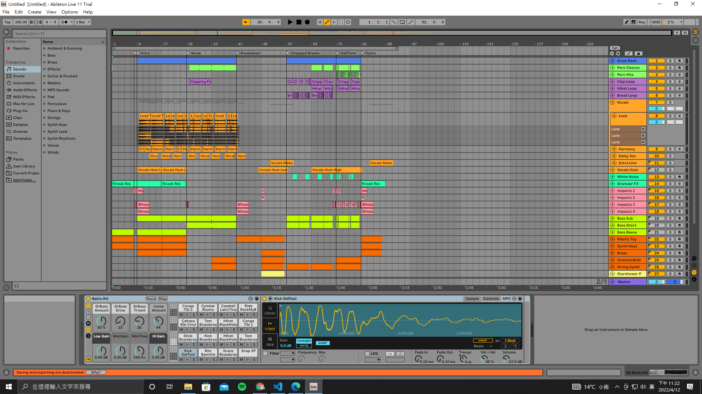

關於我 (ABOUT ME)
王傑熙 JESS WANG
中原資管二年級學生
「不忘初心,方得始終」
興趣:聽歌,彈鋼琴,彈吉他,
目前努力學習打鼓中

專業能力 Programming Skills
HTML 60%
CSS 50%
JS 50%
Java 40% Other Skills
管理學
協助他們進行義賣的工作，
整個過程都還蠻輕鬆歡樂的，
也讓我學到了如何叫賣還有與人溝通，
也因為這次的課程，
讓本來還不太熟的同學們熟悉起來，
想起來真的是非常棒的體驗。

路得學院
我們跟路得學院合作，
販售他們的雪Q餅，
不得不說那個時候還是蠻好玩的，
一有空除了擺攤還是擺攤，
也吃了不知道幾包雪Q餅。
總之，整個過程非常享受。

音樂創作
所以平常無聊的時候，
就習慣隨手開始錄製歌曲，
雖然還不太專業，
但這項愛好還是陪我度過了漫長的疫情。